Характеристики принтеров Brother
Главная | Модельный ряд | Отзывы | КонтактыМодельный ряд принтеров Brother
В таблице ниже представлены основные характеристики четырёх популярных моделей принтеров и МФУ Brother. Вы можете сравнить их по типу печати, скорости, наличию Wi-Fi и примерной цене. Под таблицей даны краткие описания и советы по выбору.
| Фото | Модель | Тип | Скорость печати | Wi-Fi | Автоподача | Цена (примерно) |
|---|---|---|---|---|---|---|
|
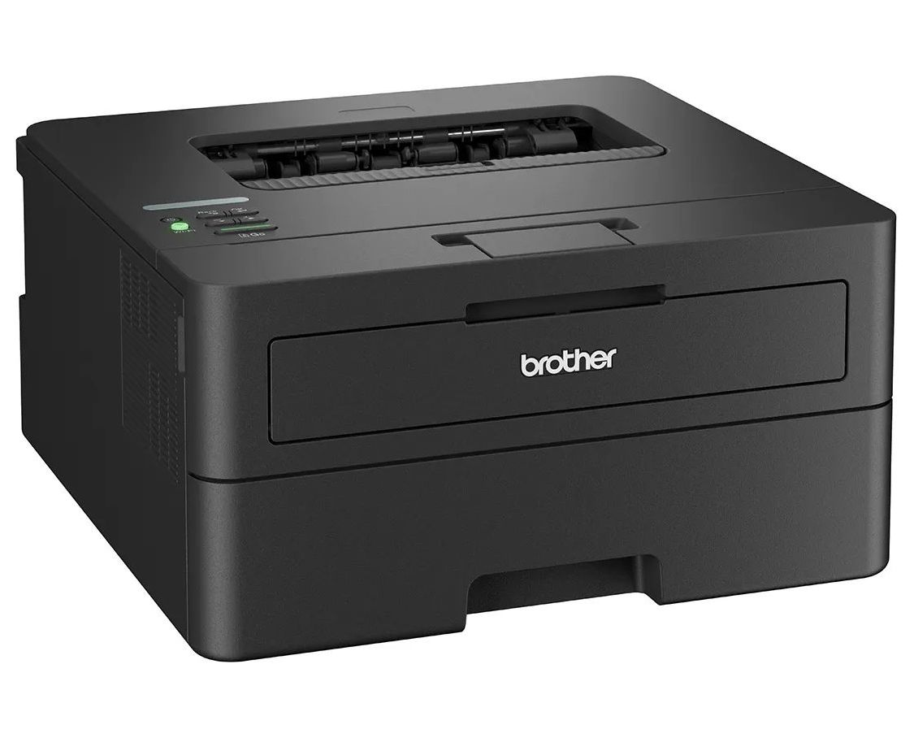 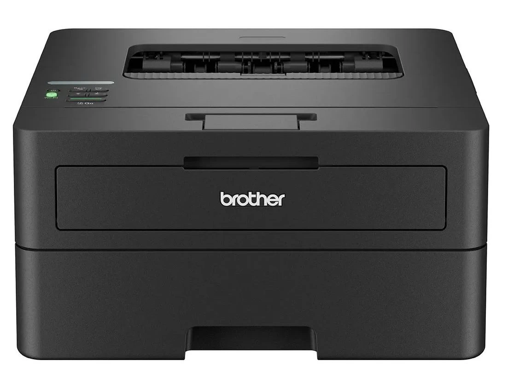 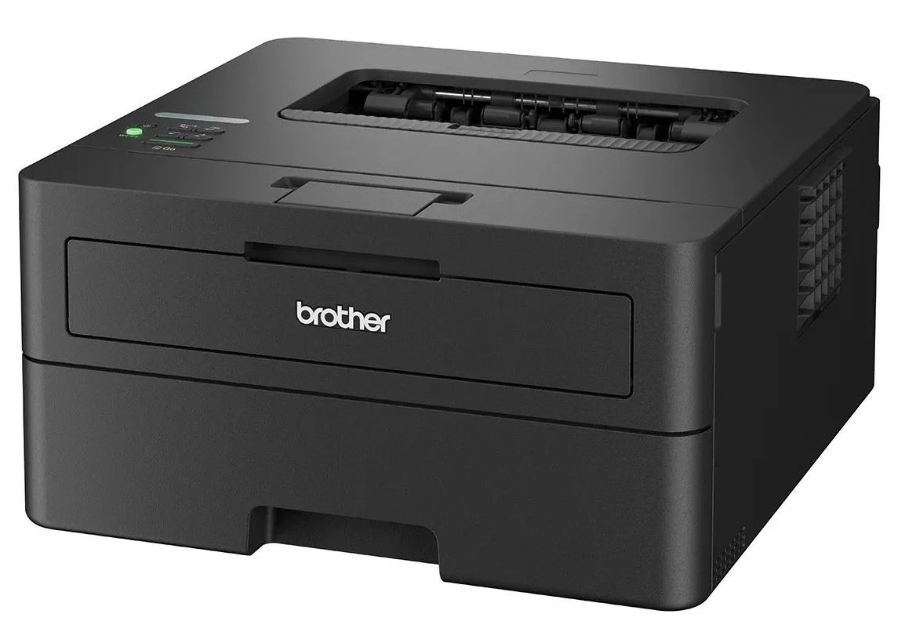 |
HL-L2460DW | Лазерный ч/б | 30 стр/мин | Есть | Нет | 12 000 руб. |
|
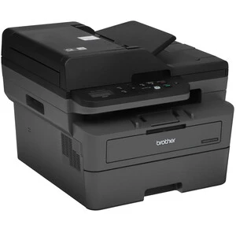 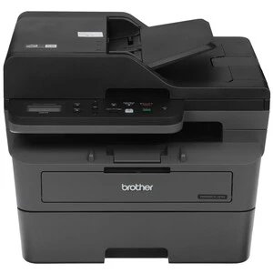 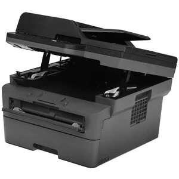 |
DCP-L2640DW | Лазерное МФУ ч/б | 30 стр/мин | Есть | Есть | 18 000 руб. |
|
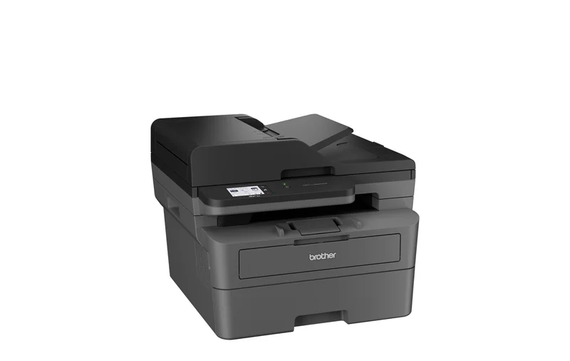 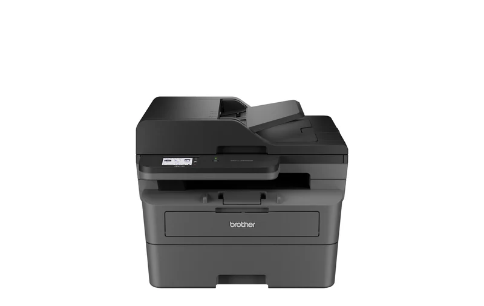 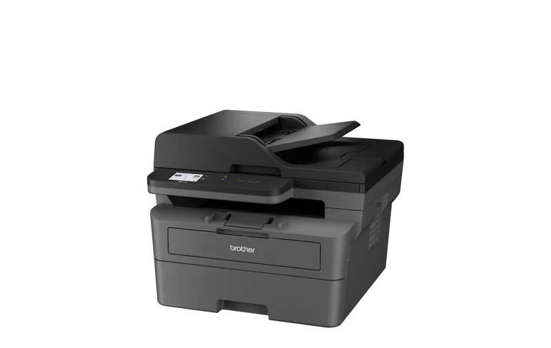 |
MFC-L2820DW | Лазерное МФУ ч/б | 33 стр/мин | Есть | Есть | 22 000 руб. |
|
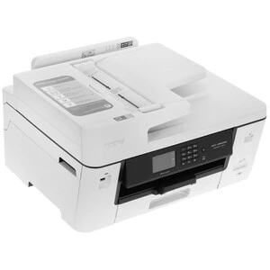 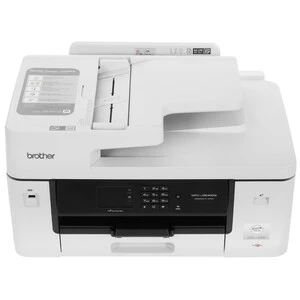 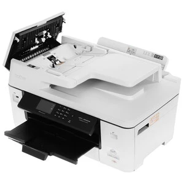 |
MFC-J4350DW | Струйное МФУ цветное | 20 стр/мин | Есть | Есть | 25 000 руб. |
Описание моделей и советы по выбору
Brother HL-L2460DW — компактный и недорогой лазерный принтер для дома или учёбы. Скорость 30 стр/мин, двусторонняя печать, Wi-Fi. Если вам не нужен сканер и вы печатаете только ч/б документы — это лучший выбор. Стартовый картридж на 1200 стр., сменный TN-2560 даёт столько же, увеличенный TN-2560XL — до 3000 стр.
Brother DCP-L2640DW — лазерное МФУ с функциями принтера, сканера и копира. Идеально для дома или небольшого офиса, где нужно сканировать. Скорость 30 стр/мин, есть автоподатчик. Использует те же картриджи (TN-2560 / TN-2560XL) и фотобарабан DR2500 (ресурс 15 000 стр.).
Brother MFC-L2820DW — более производительное лазерное МФУ для офиса. Печатает быстрее (33 стр/мин), есть цветной экран. Подходит для активной работы нескольких человек. Картриджи серии TN830: стандартный TN830 (1200 стр.), увеличенный TN830XL (3000 стр.). Ресурс барабана — 15 000 стр.
Brother MFC-J4350DW — струйное цветное МФУ для тех, кому нужна цветная печать (фотографии, презентации, открытки). Дороже при покупке, но очень экономичен в использовании. Использует раздельные картриджи и чернила в бутылках. Стартовые картриджи на 350 стр., сменные: чёрный LC556BK (3000 стр.), цветные LC556C/M/Y (2000 стр.), увеличенные — до 6000 и 5000 стр.
Сравнение в деталях
Если только ч/б печать и не нужен сканер — берите HL-L2460DW. Самый доступный вариант.
Если нужен сканер и копир — выбирайте между DCP-L2640DW и MFC-L2820DW. Для обычных задач хватит DCP, для высоких нагрузок — MFC.
Для цветной печати — берите MFC-J4350DW. Экономия на чернилах окупит разницу в цене.
Расходные материалы
Лазерные модели используют тонер-картриджи. Их можно перезаправлять или брать совместимые аналоги — это дёшево.
Струйная модель заправляется из бутылок — стоимость отпечатка минимальна.
* Цены ориентировочные, актуальны на начало 2026 года.
Принтеры Brother — проконсультируем вас по принтерам. Сделайте правильный выбор!
Наш адрес: Краснодарский край, г.Белореченск, ул.Кирова, 7
Позвоните нам по телефону: +7 (918) 954-59-98
Написать нам: dmitriyromanovich2@gmail.com
Сообщество в VK: https://vk.com/brother.russia